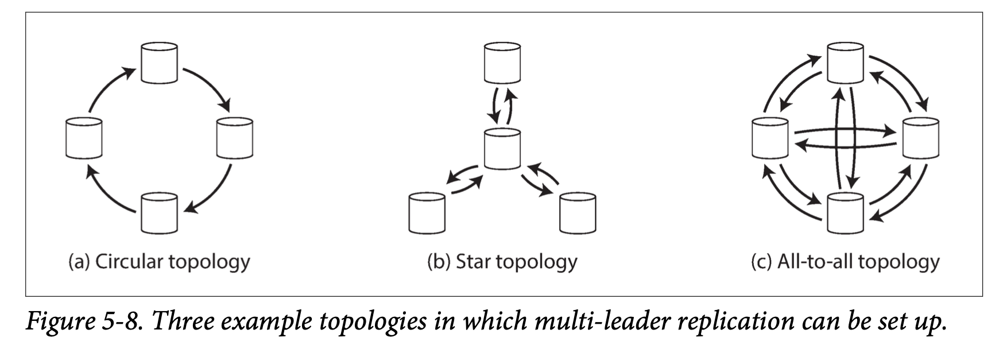
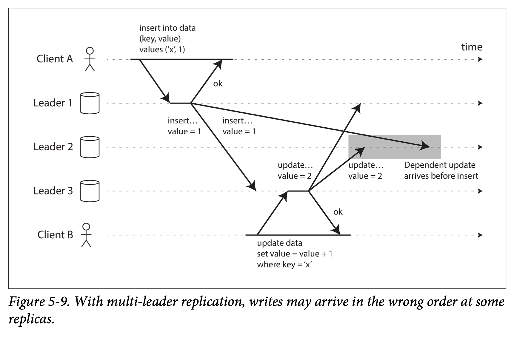

Chapter 5
Leaders and Followers¶
Replication mean keep same copies on multiple machines that are connected with network
As Mentioned in Part 2, the goals of replication are: - Reduced latency through geographically connected network - Another machine can still serve traffic while a machine is down - Balance the load to different machine when traffic spikes
This chapter assume entire dataset can fit in a single machine. Chapter 6 will discuss about partitioning when a dataset is too big for a single machine
All difficulty of replication comes from handling changes. single-leader, multi-leader and leaderless replication are different method/algorithms we could use
Replication is an old topic and method hasn't changed much since 1970s. Distributed databases is more recent There are different trade offs and issues such as eventual consistency that will be discussed
Q: How do we ensure that all the data ends up on all the replicas?¶
Each write needs to be processed by every replica otherwise it would not contain the same dataset anymore. So a common solution is leader-based replication (aka active/passive, master/slave replication)
How it works: 1. leader process all writes and forward those write to followers. The media of forwarding writes is called replication log or change stream 2. Each replica takes the log from leader and applies the changes in same order to its local storage 3. Both leader and follower can serve read
This mode of replication is a built-in feature of many relational databases, such as PostgreSQL (since version 9.0), MySQL, Oracle Data Guard [2], and SQL Server’s AlwaysOn Availability Groups [3].
Distributed Message queue/brokers use same method
leader-based replication is not restricted to only databases: distributed message brokers such as Kafka [5] and RabbitMQ highly available queues [6] also use it. Some network filesystems and replicated block devices such as DRBD are similar.
Sync vs Async¶
This is a tradeoff when implementing leader based replication (configurable option in relational DB) Figure 5-2 shows communication with time flow from left to right in this figure, follower 1 is synchronous, follower 2 is asynchronous
advantage of synchronous updates is when leader fails, follower can stood up as leader. Disadvantage is when synchronous follower is not responding it will not complete the updates for leader (leader must block until the follower is responsive again)
In practice is not possible to make all follower synchronous thus it is common to have 1 synchronous replica. This is also called semi-synchronous
Asynchronous means even if all follower is fallen behind, leader can still process request which means if leader is down and not recoverable, previous processed writes are lost
Weak durability on Asynchronous might sounds a bad trade off but it is widely used on geographically distributed data based.
Research on Replication
researchers have continued investigating replication methods that do not lose data but still provide good performance and availability. For example, chain replication [8, 9] is a variant of synchronous replication that has been successfully implemented in a few systems such as Microsoft Azure Storage [10, 11].
Setting Up New Followers¶
How do you ensure that new follower has an accurate copy of the leader's data? 1. Take a consistent snapshot of leader's database at some point in time. Most DB support this natively as they need a feature for backup 2. Copy snapshot to new follower 3. New follower connects to leader and request all data since the snapshot was taken. This requires the snapshot has a exact position in leader's replication log. This position has various names. PostgreSQL calls it log sequence number, MySQL calls it binlog coordinates 4. When follower has processed all changes since the snapshot, it is caught up
Handling node outages¶
Any node can go down, for example a node need to reboot for kernel security updates. Being able to reboot nodes without downtime is a big advantage (high availability)
Follower failure¶
Each follower will keep a log of data change received from leader. If a follower failed, it can just reconnect to leader and resume previous point of transaction that was processed
Leader failure¶
When leader fail, it needs failover which involves client reconfigure to send writes to new leader and follower connect to new leader Failover can be manual to automatic. Automatic failover involve following steps: 1. Determine leader has failed (most system use timeout) 2. Choosing new leader (election from followers, appointed by controller node etc) this is consensus problem and will be discussed in detail in Chapter 9 3. Reconfigure the system to use the new leader (tell client to send request to new leader, and ensure if old leader comes back it stay as follower)
Things can go wrong during failover: - With asynchronous replication, write might be lost if old leader never comes back. And if old leader does join, there will be conflict writes. Simple solution is to discard old leader's writes - Discard writes can be dangerous. Github incident when an out of date MySQL follower promoted to leader and primary key was using auto increment so there were primary keys used twice which result some private data to be disclosed to the wrong user - Two nodes both believe they are leader (called split brain). This is dangerous because write conflict can happen when 2 nodes are both accepting writes. For example, shopping cart is updated by mobile and desktop with split brain leaders then shopping cart will have different items. Solution is to shutdown 1 leader when 2 leaders are detected - What is the right timeout?
These issues—node failures; unreliable networks; and trade-offs around replica consistency, durability, availability, and latency—are in fact fundamental problems in distributed systems. In Chapter 8 and Chapter 9 we will discuss them in greater depth.
Implementation of Replication Logs¶
Statement based replication¶
leader logs every write request and send that statement to its followers. For relational DB, it means every INSERT, UPDATE, DELETE statement is forwarded to followers
but this can fail in various ways:
- A statement calls nondeterministic function such as NOW() where clock is different on each machine or RAND() to generate a random number
- They must execute in exact same order and can be limiting when multiple concurrently transaction is happening
- Statements that have side effects (user-defined functions) may have different result unless these side effect are absolutely deterministic.
Write-ahead log shipping¶
In Chapter 3 we talked about WAL (doesn't matter whether its BTree or LSM tree)
 We can use WAL to build a replica on another node (beside writing this log to disk, leader also sends it to its followers via network)
We can use WAL to build a replica on another node (beside writing this log to disk, leader also sends it to its followers via network)
This method of replication is used in PostgreSQL and Oracle
Disadvantage of this approach is this is very low level: a WAL contains details of which bytes were changed in which disk blocks. So it is closely coupled to storage engine (BTree or LSMTree). It also means follower and leader needs to use same version of software. (This is big deal if you want to upgrade your database software without downtime)
Logical (row-based) log replication¶
Use a different log format which allows replication log decoupled from storage engine. This type of replication log is called logical log
A logical log for relational DB is sequence of records describing writes at granularity of a row: - When insert, log contains all values of this row - When delete, log contains which row get deleted. (Typically primary key, if no primary key then all old value of the row is recorded) - When update, log contains information to uniquely identify which row/column value has updated
MySQL’s binlog (when configured to use row-based replication) uses this approach
Since logical log is decoupled from storage engine internals, leader and follower can run on different versions of database software
it is also easier for external application to parse. This is useful if you want send database content to external system such as data warehouse or building custom indexes and caches. This technique is called change data capture (Kafka can be used for this)
Trigger based replication¶
Above implementation is all in database system (without involving application code) This is usually what we want There are circumstances where flexibility is needed. For example, you only want to replicate subset of data, or replicate from one kind of database to another or need conflict resolution logic. Then move replication up to application layer is a choice
triggers and stored procedures is a feature that is available in many relational DB Trigger lets you put custom application code that is automatically executed when data change occurs in database system (trigger can log this change into another table and external process can read this change to replicate to another system)
Databus for Oracle [20] and Bucardo for Postgres [21] work like this
Problems with Replication Log¶
leader based replication is read-scaling architecture. we can add however many read replicas we want. But all writes go through leader and it realistically works with asynchronous replication (if all follower need synchronous updates, then single node failure will cause entire system stop working)
Asynchronous means your read can be stale if the follower is fallen behind. This is temporary (when follower eventually caught up, reads from leader and follower will be same). Aka eventual consistency
Eventually is vague (no limits how far a replica can fallen behind). Normally is within a second but if system is operating near capacity it might become several seconds or minutes
we will talk about 3 examples of problems and discuss approaches to solve them
Reading your own writes¶
Many app needs user to view what they have submitted (reply in a thread, comment on a discussion etc) When data is submitted, write sent to leader and read can be done from follower. But Asynchronous replication will have a problem we need read-after-write (aka read-your-writes) consistency in this case. This consistency guarantee user will see their own updates (not necessary for other users) how to implement? - Read from leader if user have modified their profile, otherwise from follower - track replication lag on followers and prevents reads on any follower has longer than 1 mins replication lag - Client can remember a timestamp for most recent write. Then system can ensure read only after that timestamp. This timestamp could be a logical timestamp (order of writes such as log sequence number) - If your replicas distributed across multiple datacenters, then any request that needs to be served by the leader must be routed to the datacenter that contains the leader
cross device read-after-write consistency. Desktop and mobile both want to see the same result after write happens. - To achieve this, you need to route all user's device to the same datacenter.
Monotonic Reads¶
This is needed when asynchronous follower can cause moving backward in time This can happen when user makes several reads from different replicas. Monotonic reads guarantee this does not happen. How to achieve this? Make sure always read from same replica (different user can read from different replica)
Consistent Prefix Reads¶
This is needed when violation of causality might happen. consistent prefix reads prevent this anomaly. It says if a sequence of writes happens in certain order, read must also in the same order This is an anomaly in partitioned/shard databases. Different partitions operate independently, so there is no global ordering of writes
user might see older part of a partition and new part of another partition
One solution is to make sure any writes that are causally related goes to same partition Or explicitly track causal dependencies
Solutions for Replication lag¶
there are ways which an application can provide a stronger guarantee than underlying database (performing certain kinds of read on leader) However, dealing with this issue is complex and error prone.
It would be better application developer didn't have to worry about replication issue and trust database "do the right thing". transactions exist for this reason.
Single node transactions existed for a long time but many distributed databases systems have abandoned them. Chapter 7 and 9 will return to transactions
Multi-Leader Replication¶
Multi leader replication allow more than 1 node to process writes.
Use Cases for Multi-Leader Replication¶
Multi leader is often in multiple data centers (so you can tolerate failure of entire datacenter, or in order to be closer to your users)
Each datacenter have a leader. Within each datacenter, leader-follower replication is used; between datacenters, leader replicates its changes to the leader in other datacenters Comparing single leader with multi leader
| Metric | Single leader | Multi leader |
|---|---|---|
| Performance | significant latency as write must go to single datacenter where leader resides | lower latency as every write can be processed in local datacenter and replicated asynchronously to other datacenter |
| Tolerance of datacenter outage | Needs another follower from different datacenter to caught up | can continue operating independently |
| Tolerance of network problem | sensitive to inter-datacenter link because write needs to be done synchronously to another datacenter | usually tolerate network problem better because asynchronous updates |
Some databases support multi-leader configurations by default, but it is also often implemented with external tools, such as Tungsten Replicator for MySQL [26], BDR for PostgreSQL [27], and GoldenGate for Oracle [19].
There are many small pitfalls in multi leader config. So it is often considered dangerous territory that should be avoided if possible [28].
below are use cases¶
Clients with offline operation¶
cross device application with offline operation (Calendar, notes, reminder etc) In this case, client's local database acts as leader and there is asynchronous multi leader replication process (sync) between the replicas of your calendar on all of your device
The replication lag maybe hours or even days. From architectural point of view, each device is a "data center".
There are tools that aim to make this kind of multi-leader configuration easier. For example, CouchDB is designed for this mode of operation [29].
Collaborative editing¶
Google Docs is a good example. When one user made a change, it is applied immediately in their web browser or client app. And asynchronously replicated to the server and other users
one way to prevent conflict is get lock at user's cursor. But usually conflict resolution is needed for this type of application
Handling Write Conflicts¶
When write conflicts occur, conflict resolution is needed.
Sync vs Async conflict detection¶
If use Sync conflict detection you may go ahead using single leader because you need to wait for all leader to confirm there is no conflict detected
Conflict avoidance¶
Application can make sure all writes for a particular record go through the same leader. For example, in an app where user can edit their own data, you can always route to same datacenter and use leader of that datacenter for read and writes (perhaps pick closest geo location for datacenter)
but if user moved or the home datacenter has failed, you still have to face with conflict resolution
Converging toward a consistent state¶
Database must resolve conflict in a convergent way, which means all replicas must arrive at the same final value when all writes are processed. There are couple of ways to achieve this: - Give each write a unique ID(timestamp, UUID, hash of key and value) and pick write with highest ID as winner (this is known as last write wins) but this approach is prone to data loss - Give each replica a unique ID, let higher numbered replica take precedence over lower replica (this approach also implies data loss) - Somehow merge the values together -- concatenate or sort them in some order - Record the conflict in an explicit data structure that stores everything and let application code or user to resolve the conflict (git)
Custom conflict resolution logic¶
Most multi leader replication tool let you write conflict resolution logic using application code On write When DB system detects conflict in the log of replicated changes, it calls conflict handler On read When conflict is detected, all the conflict writes are stored. When data is read next time, all versions of the data are returned to the application. The application may prompt user or auto resolve the conflict , and write back to database. CouchDB works this way
There has been some interesting research into automatically resolving conflicts caused by concurrent data modifications. A few lines of research are worth mention‐ ing: • Conflict-free replicated datatypes (CRDTs) [32, 38] are a family of data structures for sets, maps, ordered lists, counters, etc. that can be concurrently edited by multiple users, and which automatically resolve conflicts in sensible ways. Some CRDTs have been implemented in Riak 2.0 [39, 40]. • Mergeable persistent data structures [41] track history explicitly, similarly to the Git version control system, and use a three-way merge function (whereas CRDTs use two-way merges). • Operational transformation [42] is the conflict resolution algorithm behind col‐ laborative editing applications such as Etherpad [30] and Google Docs [31]. It was designed particularly for concurrent editing of an ordered list of items, such as the list of characters that constitute a text document.
Multi-Leader Replication Topologies¶
Replication topology describe the write path from one node to another. With more than 2 leaders, there are many topologies possible 
Most general is all to all. MySQL use circular topology by default. Circular topology is one node received writes and forward those writes with its own writes together. Another topology is star where one node forwards writes to all other nodes (can be generalized to a tree)
=> this root node in star topology is like single leader. What happen if it fails?
A problem with circular and star topologies is that if just one node fails, it can interrupt the flow of replication messages between other nodes, causing them to be unable to communicate until the node is fixed.
all to all has issues if network link is not at the same speed, which result the write order arrives differently  This results to a problem of causality(writes appear in the wrong order) To fix this issue, a technique called version vectors is used (discussed later)
However, conflict detection techniques are poorly implemented in many multi-leader replication systems. For example, at the time of writing, PostgreSQL BDR does not provide causal ordering of writes [27], and Tungsten Replicator for MySQL doesn’t even try to detect conflicts [34].
so company have in house version of conflict resolution
Leaderless Replication¶
Replication without a leader (i.e. any replica can take writes from client) is called leaderless. Some implementation let client directly send writes to multiple replicas and some implementation let client send write to a coordinator node. Coordinator does not enforce write order. This difference in design has profound consequences for the way database is used.
Writing to the Database When a Node Is Down¶
Imagine you have a database system with 3 replicas, and one of them is down (system updates or whatever). In leader based approach you need to perform a fail over
On the other hand, leaderless configuration does not have a failover concept
 Client can directly send write to all 3 replicas and if 2 respond with ok then we consider it succeeded.
Client can directly send write to all 3 replicas and if 2 respond with ok then we consider it succeeded.
You may get stale read if the failed node comes back. To solve this, when performing read, client don't send read to 1 replica but send to several replicas in parallel. Version number is used to determine which value is newer
How does replica catch up the writes?¶
2 mechanism used in Dynamo style datastores Read repair In above graph, user2345 can tell replica 3 has old value so it send newer data to it for update. this works well for values that are frequently read Anti-entropy process Let a background process to constantly look for difference between replicas and update if needed. This is different than replication log in leader based approach where write order is not guaranteed and may have significant delay for updates
Quorums¶
Generalize above example, if there are n replicas, every write must be processed by w number of replica in order to be consider successful, and we must query at least r nodes for each read. (In above example, \(n = 3, w = 2, r = 2\)) As long as \(w + r > n\) , we expect to get up to date value upon read.
Read and writes obey above rule are called quorum read and writes. In Dynamo style databases, n, w, r are configurable. A typical choice is to select a odd number for n and set \(w = r = (n + 1) / 2\) (round up)
But you can change the configuration based on need. For example, few writes and many read may benefit from setting \(w = n, r = 1\). This makes read faster with trade off where 1 nodes fail will cause the system not accepting writes
With \(w + r > n\), we can tolerate unavailable nodes as follows: - if \(w < n\), we can still process writes if some nodes are down - If \(r < n\), we can still process read if some nodes are down If fewer than required w and r are available, operation will return error
Limitations of Quorum¶
Quorum works because write set of nodes overlap with read set of nodes. w and r are set to majority so at least 1 node overlap. But this is not necessary, other assignment are possible to allow flexibility
you may set \(w + r \le n\), this configuration allows you continue processing reads and writes even if large number of replica is down with tradeoff for getting stale read
Even with \(w + r > n\) you might still get stale value depend on implementation - If a sloppy quorum is used, the w writes may end up on different nodes than the r reads - If write happens concurrently, it is not clear which happened first - If write happened concurrently with read, it is underdetermined if read returns old or new value - Even if everything is working correctly, there are edge cases in which you can get unlucky with the timing
quorum with w and r parameter can adjust the probability of stale read but it's wise not to take them as absolute guarantees. In particular you do not get reading your writes, monotonic reads, or consistent prefix reads
Stronger guarantees generally require transactions or consensus.
Monitoring¶
leader based replication can use replication lag to monitor (current write - previous write received) With leaderless, there is not write order. There are research in this area but has not become common practice.
Sloppy Quorums and Hinted Handoff¶
Appropriate configuration for quorum can tolerate failure without failover, it can also tolerate individual node going slow. Because only w or r response is needed
This makes leaderless replication appealing for application that needs high availability and low latency
However, quorum mentioned above does not tolerate fault well. A network interruption can easily cut client from majority of the nodes
Even those nodes are alive, but to the client that are cut off from them they appears to be dead.
In a large cluster if client can connect to some database nodes (not in n set of nodes), database designer face a trade-off: - is it better to just return errors? - Or should we accept writes anyway, and write them to some nodes that are reachable but aren’t among the n nodes on which the value usually lives?
Later known as sloppy quorum, w write and r reads are still required but they might not be in original n nodes.
By analogy, if you lock yourself out of your house, you may knock on the neighbor’s door and ask whether you may stay on their couch temporarily.
Once network issue is fixed, any write handled by sloppy quorum nodes will be forward to original n nodes. This is called hinted handoff
Sloppy quorum is particularly useful for increasing write availability. As long as w nodes are available for write.
This quorum is not traditional quorum but a durability guarantee. (data store in w nodes somewhere else) There is no guarantee that a read of r nodes will see it until the hinted handoff has completed.
Sloppy quorums are optional in all common Dynamo implementations. In Riak they are enabled by default, and in Cassandra and Voldemort they are disabled by default [46, 49, 50].
Example of leaderless for multi data center operation¶
Cassandra and Voldemort implement their multi-datacenter support within the normal leaderless model: the number of replicas n includes nodes in all datacenters, and in the configuration you can specify how many of the n replicas you want to have in each datacenter. Each write from a client is sent to all replicas, regardless of datacenter, but the client usually only waits for acknowledgment from a quorum of nodes within its local datacenter so that it is unaffected by delays and interruptions on the cross-datacenter link. The higher-latency writes to other datacenters are often configured to happen asynchronously, although there is some flexibility in the configuration [50, 51].
Riak keeps all communication between clients and database nodes local to one data‐ center, so n describes the number of replicas within one datacenter. Cross-datacenter replication between database clusters happens asynchronously in the background, in a style that is similar to multi-leader replication [52].
Detecting concurrent writes¶
The root problem is the same as multi leader, write can arrive out of order.
client B set x = B but get x = A
How to resolve this issue?
Last write wins¶
Each replica only store most "recent" value. Recent is quoted because it may actually not be the most recent one
We can attach timestamp on each write and discard earlier timestamp ones. This technique is called last write wins, is the only supported conflict resolution method in Cassandra [53], optional for Riak
LWW tradeoff with durability
if there are several concurrent writes to the same key, even if they were all reported as successful to the client (because they were written to w replicas), only one of the writes will survive and the others will be silently discarded.
not good for banking
Happens before relationship¶
this example shows happens before relationship where B's operation build on top of A. We also say that B is causally dependent on A. (thus anomaly is called causality violation) figure 5-12 doesn't have causal dependency
So whenever you have 2 operations, there are 3 possibility 1. A happens before B 2. B happens before A 3. A and B happen concurrently When there is causal dependency, later operation override earlier one. For concurrent operation, conflict need to be resolved.
For defining concurrency, exact time doesn’t matter: we simply call two operations concurrent if they are both unaware of each other, regardless of the physical time at which they occurred.
same with single core CPU, each process doesn't know each other. Doesn't matter they sending sys call at the exact same time or not
Capture happens before relationship¶
Start with single replica, then generalize to multiple replicas
Merging¶
In this shopping cart example, we can just take union of all values. However, if you want to allow people to remove from the cart, then union will cause things reappear in their shopping cart To prevent this, add a deletion marker such as tombstone
As merging siblings in application code is complex and error-prone, there are some efforts to design data structures that can perform this merging automatically, as dis‐ cussed in “Automatic Conflict Resolution” on page 174. For example, Riak’s datatype support uses a family of data structures called CRDTs [38, 39, 55] that can automatically merge siblings in sensible ways, including preserving deletions.
Version vectors¶
Above algo works for single replica, how do we do this with multiple replicas? Instead of single version number, we have version number per replica as well as per key. Each replica increase version number when processing and also track version from other replicas
This collection of version numbers from all replicas are called version vector like version number, version vector is sent to client when values are read.
Summary¶
This chapter look at replication and issue with it. There are 3 main approach to replication: 1. Single leader (all write goes to one node) 2. Multi leader (each write to one of several leaders) 3. Leaderless (write send to several node in parallel)
Replication has following goal: - High availability - Disconnected operation (still working when there is network interruption) - Latency (replica that is closer to user) - Scalability (balance the load with replica)
We discussed few consistency models Read-after-write user should always see data that they submitted themselves Monotonic reads Time shouldn't go back (After user see a newer value, older one should come back) Consistent prefix read User should see data as the order of write (in causal sense, seeing question before answer)